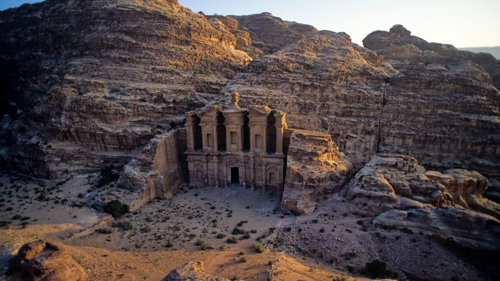

About..
The trading business gained the Nabataeans considerable revenue and Petra
became the focus of their wealth. The Nabataeans were accustomed to living
in the barren deserts, unlike their enemies, and were able to repel attacks
by taking advantage of the area's mountainous terrain. They were particularly
skillful in harvesting rainwater, agriculture and stone carving. Petra flourished
in the 1st century AD, when its famous Al-Khazneh structure - believed to be
the mausoleum of Nabataean king Aretas IV – was constructed, and its population
peaked at an estimated 20,000 inhabitants.[10]
return to top
return to hompage